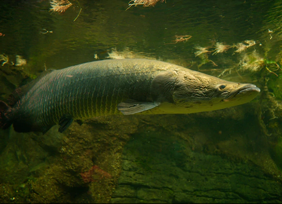
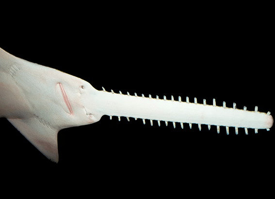
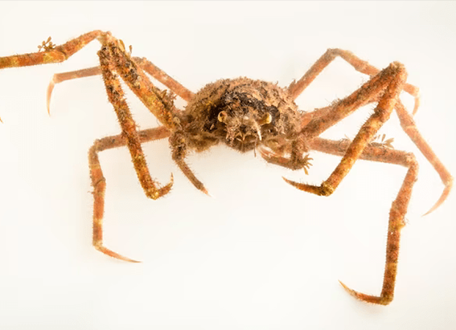

NATIONAL GEOGRAPHIC
Secretary birds
ANIMAL
What are secretary birds?
These raptors of sub-Saharan Africa’s savannas, grasslands, and shrub lands stand at nearly four feet tall and standing is often how you’ll find them, because they primarily move around on foot. They fly only when necessary, such as to reach their nest in the trees and for courtship displays.
The secretary bird is distinguished by its long legs and a dramatic black crest of feathers on the back of its head. Its body is covered in whitish-gray feathers, with two long, black-tipped tail feathers. Its bare face is usually yellow, orange or red.
The top half of its long legs has black feathers, so it looks a bit like it’s wearing bicycle shorts. The lower half is covered with scales and has barely visible feathers.
While it’s not known for certain where the name “secretary bird” comes from, one explanation is that they’re named after 19th lawyer’s clerks, or secretaries. Secretaries typically wore gray coats and knee-length black pants, and they would tuck quill pens behind their ears, similar to the bird’s coloring and head feather
Hunting and diet
Secretary birds and caracaras are the only two birds of prey that hunt on the ground instead of from the air. Secretary birds’ diets consist of small rodents, amphibians, and reptiles.
Working in small groups or with a partner, secretary birds hunt from just after dawn through to the evening, resting only during the peak heat of the afternoon. They sometimes capture prey by striking at it with their short, hooked beaks, but more famously, secretary birds use their large feet and sharp claws to stomp it to death.
Snakes are a favorite meal, and in fact, the bird’s scientific name, Sagittarius serpentarius, means “the archer of snakes.” If a snake tries striking a secretary bird, it usually ends up with a mouthful of feathers from the bird’s almost seven-foot wingspan, which it uses as a distraction. The scales on their lower legs provide additional protection from snakebites.
Mating and reproduction
Mating displays take place both in the air and on the ground. They perform aerial courtship displays, similar to other raptors, called “pendulum flights.” The bird will swoop down, then up again, repeating the undulating pattern over and over. Sometimes one will dive at the other, who will roll backward in the air, presenting its claws.
On the ground, a pair may dance around each other, wings outstretched, in a display similar to that of cranes. Sometimes other secretary birds will join in.
Mating pairs build nest of sticks together, usually in an acacia tree. They’ll use the same nest for years, continuing to add to it season after season.
The female usually lays three blue-green eggs, which both parents incubate. When the eggs hatch after about 50 days, both parents care for the chicks, including feeding them regurgitated prey. The young birds fledge after about three months.
Comments :
- john Very good
- john Very good
Leave a Reply
Your email address will not be published. Required fields are marked*
Related posts:
-
Arapaima
Also known as the paiche or the pirarucu, the arapaima is an air-breathing fish that plies the rainforest rivers of South America's Amazon Basin and nearby lakes and swamps. One of the world's largest freshwater fish species
View article -
Largetooth sawfish
The largetooth sawfish is one of five species of sawfish rays that have chainsaw-like snouts called rostrums. This species once swam in warm waters around the world, showing up in many cultures. Mainly because of fishing
View article -
Japanese spider crab
giants they are. Of the 60,000 species of crustaceans on Earth, Japanese spider crabs are the largest, spanning up to 12.5 feet from the tip of one front claw to the other. They’re also one of the world’s largest arthropods, animals with no backbone
View article